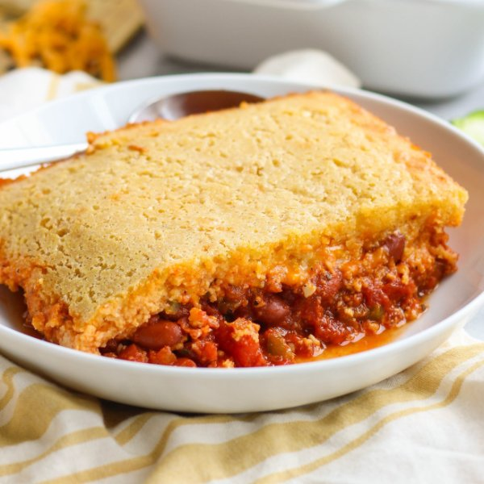

Kidney Bean Chili with Melty Cheddar & Cornbread Topping

Total Time
40 min
Nutrition (per serving)
699.2 kcalCalories
27.4 gProtein
85.9 gCarbs
29.3 gFat
Full nutrition table
| Calories | 699.2 kcal |
| Total fat | 29.3 g |
| Saturated fat | 15.8 g |
| Trans fat | 0.9 g |
| Cholesterol | 149.9 mg |
| Sodium | 603.8 mg |
| Carbohydrates | 85.9 g |
| Fiber | 15.4 g |
| Sugars | 30.9 g |
| Protein | 27.4 g |
| Potassium | 1151.4 mg |
| Calcium | 457.9 mg |
| Iron | 6.6 mg |
| Vitamin A | 1520.2 IU |
| Vitamin C | 114.8 mg |
| Vitamin D | 50.5 IU |
Cookware
Ingredients
- ½ (8 oz) blockcheddar cheese
- 2 (14.5 oz) cansdiced tomatoes
- 2eggs
- 2 clovesgarlic
- 2jalapeño peppers
- 2 (15 oz) canskidney beans
- ½ cuppolenta (cornmeal)
- 2red bell peppers
- 2 tbsptomato paste
- 4 fl ozwhole milk
- 1 mediumyellow onion
- all-purpose flour
- baking powder
- black pepper
- brown sugar
- butter, unsalted
- chili powder
- cumin, ground
- oregano, dried
- salt
Steps
- Preheat oven to 400°F.
- Wash and small dice bell peppers. Peel and mince garlic. Peel and small dice onion.2 red bell peppers
2 cloves garlic
1 medium yellow onion - Wash and quarter the jalapeños lengthwise; seed and remove ribs with a spoon. Finely mince. (Be careful, with jalapeños, do not touch your eyes and ensure you wash your hands after handling or wear gloves while preparing).2 jalapeño peppers
- Preheat a large ovenproof skillet over medium heat.
- Once the skillet is hot, add butter and swirl to coat the bottom.2 tsp butter, unsalted
- Add bell peppers, garlic, onion, and jalapeños to the skillet; cook, stirring frequently, until softened, 4-6 minutes.
- Meanwhile, drain and rinse beans.2 (15 oz) cans kidney beans
- Add beans, tomatoes, water, tomato paste, and spices to the skillet. Reduce heat to low and cook, stirring occasionally, while you prepare the cornbread batter.2 (14.5 oz) cans diced tomatoes
⅔ cup water
2 tbsp tomato paste
2 tsp chili powder
2 tsp oregano
1 tsp cumin
1 tsp salt
½ tsp black pepper - Melt butter in a microwave or saucepan. Once melted, add to a medium bowl.¼ cup butter, unsalted
- Add milk and eggs to the bowl with the butter and whisk to combine. In a separate medium bowl, stir together cornmeal, flour, sugar, baking powder, and salt. Gradually add wet ingredients to the bowl with the dry ingredients and stir to combine.4 fl oz (½ cup) whole milk
2 eggs
½ cup polenta (cornmeal)
½ cup all-purpose flour
¼ cup brown sugar
½ tsp baking powder
½ tsp salt - Coarsely grate cheddar.½ (8 oz) block cheddar cheese
- Sprinkle cheese over the bean mixture. Pour cornbread batter on top and smooth into a thin layer with a spatula.
- Place skillet in the oven and bake until cornbread is golden and cooked through, 20-22 minutes.
- To serve, divide chili and cornbread between bowls and enjoy!